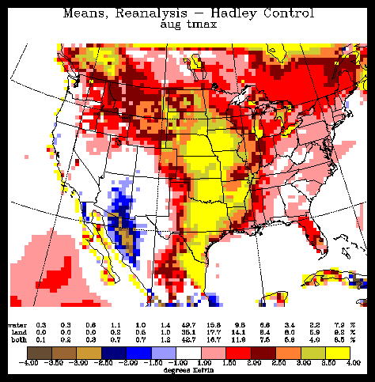
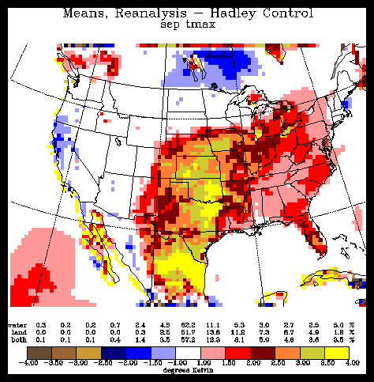
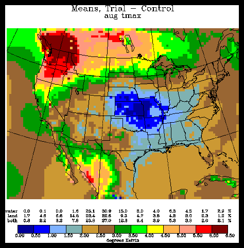
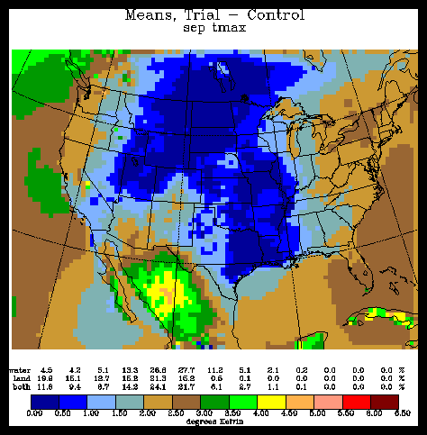
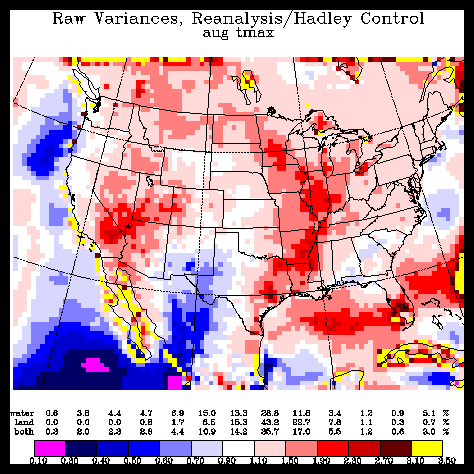
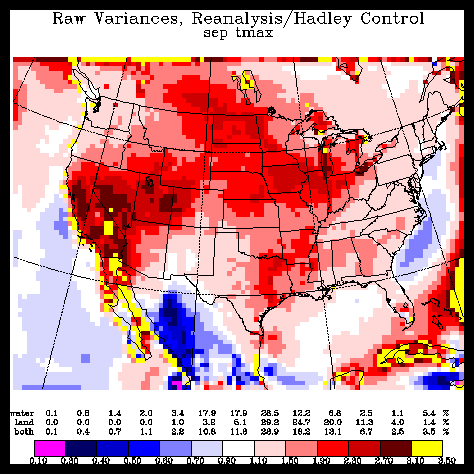
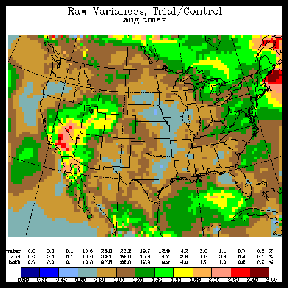
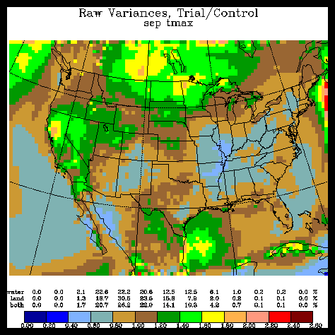

Difference of 10-yr average maximum temperature (Reanalysis driven minus Hadley contemporary climate).


Difference of 10-yr average maximum temperature (Hadley scenario minus Hadley contemporary).


Ratio of 10-yr variance of maximum temperature (Reanalysis driven minus Hadley contemporary).


Ratio of 10-yr variance of maximum temperature (Hadley scenario minus Hadley contemporary).

